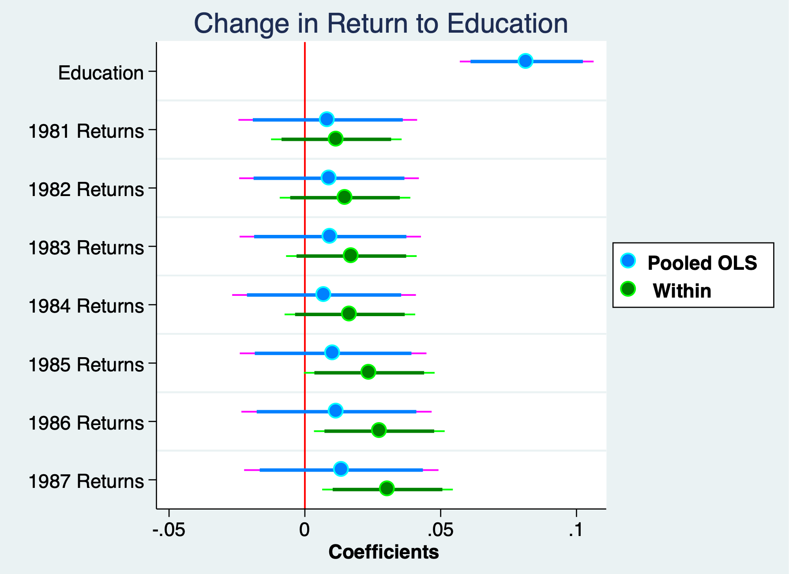

Chapter 2 Fixed Effects (Within) Estimator
We will implement the fixed effects (within) estimator. We will need to use the xtset command to establish our unit of analysis dimension and our time dimension in our panel data. Our main stata command to implement a FD is xtreg with the option fe. It is important to include the option fe. If you forget, your model will be a random effects model.
2.2 Has returns to education changed over time
Lesson: We can interact time binaries with continuous time-invariant data to see if returns to education have changed over time<
With fixed effects or first differencing, we cannot assess time-invariant variables. Variables that do not vary over time, such as sex, race, or education (assuming) education is static. But, if we interact education with time binaries, we can assess whether returns to education have increased over time.
We can test to see if returns to education are constant over time.
Vella and Verbeek (1998) estimate to see if the returns to education have change over time. We have some variables that are not time-invariant, such as union status and marital status. Experience does growth but it grows at a constant rate. We have a few variable that do not (or we would expect not to change), such as race and education (for older workers).
We use the natural log of wages, which has nice properties, such as being are more normally distributed and providing elasticities. It also can take care of inflation when we add time period binaries.
Set up the Panel
Pooled OLS
Source | SS df MS Number of obs = 4,360
-------------+---------------------------------- F(19, 4340) = 50.92
Model | 225.412805 19 11.8638318 Prob > F = 0.0000
Residual | 1011.11684 4,340 .23297623 R-squared = 0.1823
-------------+---------------------------------- Adj R-squared = 0.1787
Total | 1236.52964 4,359 .283672779 Root MSE = .48268
------------------------------------------------------------------------------
lwage | Coef. Std. Err. t P>|t| [95% Conf. Interval]
-------------+----------------------------------------------------------------
educ | .081673 .0125675 6.50 0.000 .0570343 .1063117
1.d81 | -.0356958 .199359 -0.18 0.858 -.4265413 .3551497
1.d82 | -.0315288 .1998095 -0.16 0.875 -.4232575 .3602
1.d83 | -.0342801 .2007839 -0.17 0.864 -.4279192 .3593589
1.d84 | .0242933 .2025167 0.12 0.905 -.3727429 .4213294
1.d85 | .0058838 .2052301 0.03 0.977 -.3964719 .4082395
1.d86 | .0251586 .2092184 0.12 0.904 -.3850164 .4353336
1.d87 | .0372565 .2148364 0.17 0.862 -.3839326 .4584456
|
d81#c.educ |
1 | .0084448 .0167792 0.50 0.615 -.024451 .0413407
|
d82#c.educ |
1 | .0088899 .0168742 0.53 0.598 -.0241921 .041972
|
d83#c.educ |
1 | .0093544 .0170326 0.55 0.583 -.0240381 .042747
|
d84#c.educ |
1 | .0070671 .0172551 0.41 0.682 -.0267617 .0408958
|
d85#c.educ |
1 | .0104027 .0175306 0.59 0.553 -.0239662 .0447716
|
d86#c.educ |
1 | .0116562 .0178614 0.65 0.514 -.0233613 .0466737
|
d87#c.educ |
1 | .0134166 .0182525 0.74 0.462 -.0223676 .0492008
|
exper | .0568876 .0154436 3.68 0.000 .0266102 .087165
expersq | -.001919 .0009455 -2.03 0.042 -.0037726 -.0000654
1.married | .1229473 .0155752 7.89 0.000 .0924119 .1534827
1.union | .1720565 .0171378 10.04 0.000 .1384575 .2056554
_cons | .2175863 .1641736 1.33 0.185 -.1042777 .5394503
------------------------------------------------------------------------------Fixed Effects (Within)
note: educ omitted because of collinearity
Fixed-effects (within) regression Number of obs = 4,360
Group variable: nr Number of groups = 545
R-sq: Obs per group:
within = 0.1708 min = 8
between = 0.1900 avg = 8.0
overall = 0.1325 max = 8
F(16,3799) = 48.91
corr(u_i, Xb) = 0.0991 Prob > F = 0.0000
------------------------------------------------------------------------------
lwage | Coef. Std. Err. t P>|t| [95% Conf. Interval]
-------------+----------------------------------------------------------------
educ | 0 (omitted)
1.d81 | -.0224158 .1458885 -0.15 0.878 -.3084431 .2636114
1.d82 | -.0057611 .1458558 -0.04 0.968 -.2917243 .2802021
1.d83 | .0104297 .1458579 0.07 0.943 -.2755377 .2963971
1.d84 | .0843743 .1458518 0.58 0.563 -.2015811 .3703297
1.d85 | .0497253 .1458602 0.34 0.733 -.2362465 .3356971
1.d86 | .0656064 .1458917 0.45 0.653 -.2204273 .3516401
1.d87 | .0904448 .1458505 0.62 0.535 -.195508 .3763977
|
d81#c.educ |
1 | .0115854 .0122625 0.94 0.345 -.0124562 .0356271
|
d82#c.educ |
1 | .0147905 .0122635 1.21 0.228 -.0092533 .0388342
|
d83#c.educ |
1 | .0171182 .0122633 1.40 0.163 -.0069251 .0411615
|
d84#c.educ |
1 | .0165839 .0122657 1.35 0.176 -.007464 .0406319
|
d85#c.educ |
1 | .0237085 .0122738 1.93 0.053 -.0003554 .0477725
|
d86#c.educ |
1 | .0274123 .012274 2.23 0.026 .0033481 .0514765
|
d87#c.educ |
1 | .0304332 .0122723 2.48 0.013 .0063722 .0544942
|
1.married | .0548205 .0184126 2.98 0.003 .018721 .09092
1.union | .0829785 .0194461 4.27 0.000 .0448527 .1211042
_cons | 1.362459 .0162385 83.90 0.000 1.330622 1.394296
-------------+----------------------------------------------------------------
sigma_u | .37264193
sigma_e | .35335713
rho | .52654439 (fraction of variance due to u_i)
------------------------------------------------------------------------------
F test that all u_i=0: F(544, 3799) = 8.09 Prob > F = 0.0000If we use FE or FD, we cannot assess race, education, or experience since they remain constant, but we can include dummy interactions.
These are changes in the returns to education compared to the base year of 1980 And only \(1987 * education\) and \(1986 * education\) appear to be insignificant
Compare
(1) (2)
OLS Within
--------------------------------------------
educ 0.0817*** 0
(0.0126) (.)
1.d81 -0.0357 -0.0224
(0.199) (0.146)
1.d82 -0.0315 -0.00576
(0.200) (0.146)
1.d83 -0.0343 0.0104
(0.201) (0.146)
1.d84 0.0243 0.0844
(0.203) (0.146)
1.d85 0.00588 0.0497
(0.205) (0.146)
1.d86 0.0252 0.0656
(0.209) (0.146)
1.d87 0.0373 0.0904
(0.215) (0.146)
1.d81#c.educ 0.00844 0.0116
(0.0168) (0.0123)
1.d82#c.educ 0.00889 0.0148
(0.0169) (0.0123)
1.d83#c.educ 0.00935 0.0171
(0.0170) (0.0123)
1.d84#c.educ 0.00707 0.0166
(0.0173) (0.0123)
1.d85#c.educ 0.0104 0.0237
(0.0175) (0.0123)
1.d86#c.educ 0.0117 0.0274*
(0.0179) (0.0123)
1.d87#c.educ 0.0134 0.0304*
(0.0183) (0.0123)
exper 0.0569***
(0.0154)
expersq -0.00192*
(0.000945)
1.married 0.123*** 0.0548**
(0.0156) (0.0184)
1.union 0.172*** 0.0830***
(0.0171) (0.0194)
_cons 0.218 1.362***
(0.164) (0.0162)
--------------------------------------------
N 4360 4360
F 50.92 48.91
r2 0.182 0.171
--------------------------------------------
Standard errors in parentheses
* p<0.05, ** p<0.01, *** p<0.001Returns to education have increased by about 3.1% between 1987 and 1980.
3.0866798Plot the Coefficients
quietly reg lwage c.edu##i.d8* exper expersq i.married i.union
estimates store pooled
quietly xtreg lwage c.edu##i.d8* i.married i.union, fe
estimates store fe
coefplot ///
(pooled, label("{bf:Pooled OLS}") mcolor(midblue) mlcolor(cyan) ///
ciopts(lcolor(magenta midblue))) /// options for first group
(fe, label("{bf: Within}") mcolor(green) mlcolor(lime) ///
ciopts(lcolor(lime green))), /// options for second gropu
title("Change in Return to Education") ///
keep(educ 1.d81#c.educ 1.d82#c.educ 1.d83#c.educ 1.d84#c.educ ///
1.d85#c.educ 1.d86#c.educ 1.d87#c.educ) ///
xline(0, lcolor(red) lwidth(medium)) scheme(jet_white) ///
xtitle("{bf: Coefficients}") ///
graphregion(margin(small)) ///
coeflabels(educ="Education" 1.d81#c.educ="1981 Returns" ///
1.d82#c.educ="1982 Returns" 1.d83#c.educ="1983 Returns" ///
1.d84#c.educ="1984 Returns" 1.d85#c.educ="1985 Returns" ///
1.d86#c.educ="1986 Returns" 1.d87#c.educ="1987 Returns") ///
msize(large) mcolor(%85) mlwidth(medium) msymbol(circle) /// marker options
levels(95 90) ciopts(lwidth(medthick thick) recast(rspike rcap)) ///ci options for all groups
legend(ring(1) col(1) pos(3) size(medsmall))
graph export "/Users/Sam/Desktop/Econ 645/Stata/week4_edu_returns.png", replace
Test for Serial Correlation
Test for Serial Correlation. Use the option residuals or resid to get post-estimation residuals. If you don’t specify resid, Stata will return ( hat_{y} ) instead of ( hat_{u} )
Our null hypothesis is that there is no serial correlation or the coefficient on our lagged residuals is zero. We’ll regress u on lag of u AR(1) model without a constant
Source | SS df MS Number of obs = 3,815
-------------+---------------------------------- F(1, 3814) = 2181.06
Model | 332.737937 1 332.737937 Prob > F = 0.0000
Residual | 581.856111 3,814 .152557973 R-squared = 0.3638
-------------+---------------------------------- Adj R-squared = 0.3636
Total | 914.594048 3,815 .239736317 Root MSE = .39059
------------------------------------------------------------------------------
u | Coef. Std. Err. t P>|t| [95% Conf. Interval]
-------------+----------------------------------------------------------------
u |
L1. | .5857228 .0125418 46.70 0.000 .5611336 .610312
------------------------------------------------------------------------------We can see that we have positive serial correlation since the coefficient on our lagged residual is positive and statistically significant. We will need to cluster our standard errors to account for the positive serial correlation.
Dealing with Heteroskedasticity and Serial Correlation
For heteroskedasticity, we will need to use heteroskedasticity-robust standard errors by using the robust option.
For serial correlation, we will need to cluster our standard errors. We will cluster the standard errors at the unit of analysis level.
eststo nocluster: quietly xtreg lwage c.edu##i.d8* i.married i.union, fe
eststo clustered: quietly xtreg lwage c.edu##i.d8* i.married i.union, fe robust cluster(nr)
esttab nocluster clustered, mtitle ("FE" "FE Clustered") drop(0.*) se (1) (2)
FE FE Clustered
--------------------------------------------
educ 0 0
(.) (.)
1.d81 -0.0224 -0.0224
(0.146) (0.144)
1.d82 -0.00576 -0.00576
(0.146) (0.139)
1.d83 0.0104 0.0104
(0.146) (0.154)
1.d84 0.0844 0.0844
(0.146) (0.159)
1.d85 0.0497 0.0497
(0.146) (0.157)
1.d86 0.0656 0.0656
(0.146) (0.171)
1.d87 0.0904 0.0904
(0.146) (0.157)
1.d81#c.educ 0.0116 0.0116
(0.0123) (0.0122)
1.d82#c.educ 0.0148 0.0148
(0.0123) (0.0118)
1.d83#c.educ 0.0171 0.0171
(0.0123) (0.0131)
1.d84#c.educ 0.0166 0.0166
(0.0123) (0.0138)
1.d85#c.educ 0.0237 0.0237
(0.0123) (0.0136)
1.d86#c.educ 0.0274* 0.0274
(0.0123) (0.0147)
1.d87#c.educ 0.0304* 0.0304*
(0.0123) (0.0135)
1.married 0.0548** 0.0548*
(0.0184) (0.0212)
1.union 0.0830*** 0.0830***
(0.0194) (0.0230)
_cons 1.362*** 1.362***
(0.0162) (0.0203)
--------------------------------------------
N 4360 4360
--------------------------------------------
Standard errors in parentheses
* p<0.05, ** p<0.01, *** p<0.0012.3 Rental Prices
Exercise 1: Compare Pooled OLS, First Difference, and Fixed Effects Within
Get the data here: rental.dta
The data on rental prices and other variables in college towns from 1980 to 1990. Do more students affect the prices? The general model with unobserved fixed effects is \[ ln(rent_{i,t}) = \beta_0 + \delta_0 y90_t + \beta_1 ln(pop_{i,t})+\beta_2 ln(avginc_{i,t})+\beta_4 pctstu_{i,t} + a_t + a_i + \varepsilon_{i,t} \] Where pop is city population, avginc is average income, pctstu is the student percent of the population, and rent is the nominal rental prices
- Estimate a Pooled OLS. What does the estimate on y90 tell you?
- Are there concerns with the standard errors in the Pooled OLS?
- Use a First difference model. Does the coefficient on b3 change?
- Use a FE Within model. Are the results the same as the FD model?
Set the Panel
panel variable: city (strongly balanced)
time variable: year, 80 to 90
delta: 10 unitsPooled OLS
Linear regression Number of obs = 128
F(4, 123) = 223.26
Prob > F = 0.0000
R-squared = 0.8613
Root MSE = .12592
------------------------------------------------------------------------------
| Robust
lrent | Coef. Std. Err. t P>|t| [95% Conf. Interval]
-------------+----------------------------------------------------------------
1.y90 | .2622267 .0579584 4.52 0.000 .1475017 .3769517
lpop | .0406863 .0223732 1.82 0.071 -.0036 .0849726
lavginc | .5714461 .0989016 5.78 0.000 .3756765 .7672157
pctstu | .0050436 .0011488 4.39 0.000 .0027696 .0073176
_cons | -.5688069 .8506229 -0.67 0.505 -2.252563 1.114949
------------------------------------------------------------------------------First Difference
note: 1.y90 omitted because of collinearity
Source | SS df MS Number of obs = 64
-------------+---------------------------------- F(3, 60) = 9.51
Model | .231738668 3 .077246223 Prob > F = 0.0000
Residual | .487362198 60 .008122703 R-squared = 0.3223
-------------+---------------------------------- Adj R-squared = 0.2884
Total | .719100867 63 .011414299 Root MSE = .09013
------------------------------------------------------------------------------
D.lrent | Coef. Std. Err. t P>|t| [95% Conf. Interval]
-------------+----------------------------------------------------------------
1.y90 | 0 (omitted)
|
lpop |
D1. | .0722456 .0883426 0.82 0.417 -.104466 .2489571
|
lavginc |
D1. | .3099605 .0664771 4.66 0.000 .1769865 .4429346
|
pctstu |
D1. | .0112033 .0041319 2.71 0.009 .0029382 .0194684
|
_cons | .3855214 .0368245 10.47 0.000 .3118615 .4591813
------------------------------------------------------------------------------Fixed Effects
Fixed-effects (within) regression Number of obs = 128
Group variable: city Number of groups = 64
R-sq: Obs per group:
within = 0.9765 min = 2
between = 0.2173 avg = 2.0
overall = 0.7597 max = 2
F(4,60) = 624.15
corr(u_i, Xb) = -0.1297 Prob > F = 0.0000
------------------------------------------------------------------------------
lrent | Coef. Std. Err. t P>|t| [95% Conf. Interval]
-------------+----------------------------------------------------------------
1.y90 | .3855214 .0368245 10.47 0.000 .3118615 .4591813
lpop | .0722456 .0883426 0.82 0.417 -.104466 .2489571
lavginc | .3099605 .0664771 4.66 0.000 .1769865 .4429346
pctstu | .0112033 .0041319 2.71 0.009 .0029382 .0194684
_cons | 1.409384 1.167238 1.21 0.232 -.9254394 3.744208
-------------+----------------------------------------------------------------
sigma_u | .15905877
sigma_e | .06372873
rho | .8616755 (fraction of variance due to u_i)
------------------------------------------------------------------------------
F test that all u_i=0: F(63, 60) = 6.67 Prob > F = 0.0000